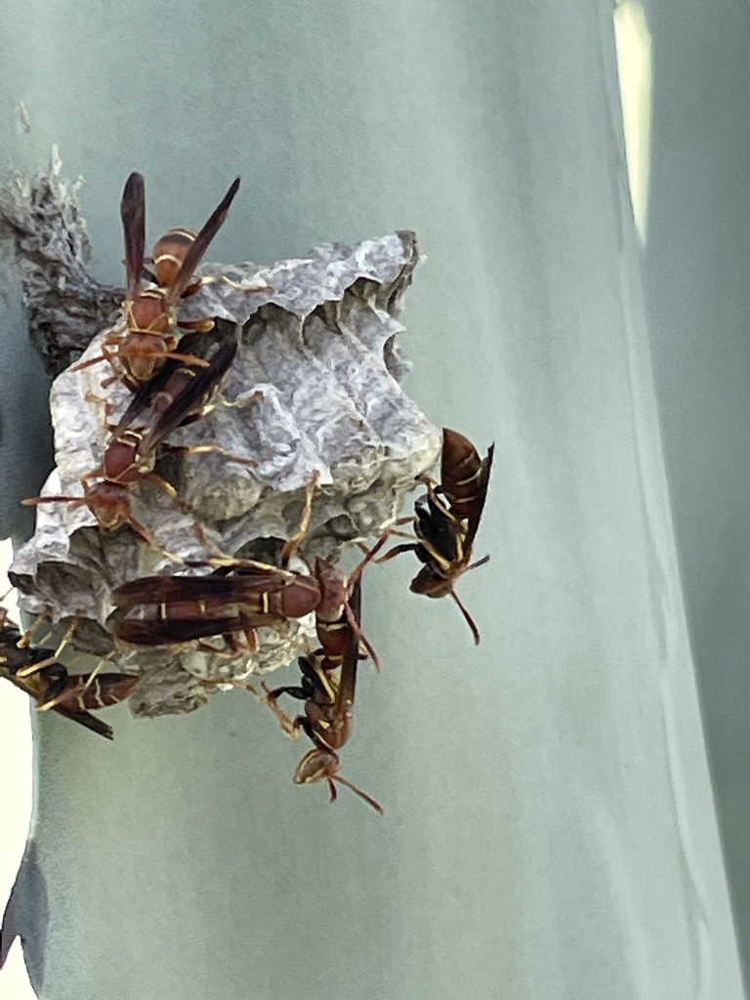

- The nest is literally made of paper — workers scrape weathered wood fibers from fence posts and dead stems, chew them into pulp, and press them into the thin hexagonal cells where eggs are laid. No glue, no staples; just wasp saliva and patience.
- A colony lives for roughly eight months, then falls apart. Only mated females survive winter — tucked under bark or in sheltered spots — and each one that makes it to spring has a shot at founding a brand-new nest.
- Paper wasps can sting repeatedly. Unlike honeybees, they do not leave the stinger behind, so a single wasp disturbed at her nest can deliver more than one sting before retreating.
- Colonies sometimes relocate mid-season. When predators destroy a nest, the foundress may simply rebuild up to about 35 feet away and start over — researchers have documented satellite nests accounting for more than a third of all nests built between May and July.
A slender, long-legged wasp roughly 15 to 20 mm (about 5/8 to 3/4 in) long. The narrow 'waist' — the petiole connecting thorax to abdomen — is the most consistent shape feature separating paper wasps from bees at a glance. Long legs dangle visibly in flight.
Both sexes have lemon-yellow abdominal segments. Females have a single fine black longitudinal line running down the center of the mesothorax (the middle body segment); males have two lines along the sides of the mesothorax. Both sexes have yellow mandibles. Overall the insect looks yellow and black, slender, and wasp-waisted.
Females and males are morphologically very similar and nearly the same size. The difference in the number and placement of the black lines on the mesothorax — one central line in females, two lateral lines in males — is the most reliable field mark, though it requires a close view.
Open-celled, umbrella- or fan-shaped, and gray-brown. Cells face downward from a single central stalk. The whole structure looks like a small piece of coarse gray cardboard with holes in it. Nests are typically small to medium — a few dozen to perhaps a hundred cells at peak season — and are built in sheltered spots: under eaves, on shrub stems, beneath fence rails.
Several other Polistes species share the park. The red wasp (P. carolina) is larger and heavily reddish-brown. P. exclamans is reddish-brown with pale yellow banding and much more common in suburban settings. Yellowjackets are similar in size but hold their wings flat against the body at rest and have a rounder, less elongated abdomen. Honeybees are hairy and never have the narrow wasp waist.
Essentially silent to human ears except for the soft buzz of wingbeats in flight. There are no songs, calls, or stridulations. The only reliable auditory cue near a nest is the low, dry hum of multiple wasps flying or fanning their wings — easy to miss until you are quite close.
Look for a slender, long-legged, yellow-and-black wasp with a visibly pinched waist. The lemon-yellow abdomen and yellow mandibles are the key color marks; the narrow petiole clinches the paper-wasp ID. In flight, watch for the dangling hind legs — a reliable paper-wasp trait. The open, papery, downward-facing comb nest, usually tucked under an overhang or attached to a shrub stem, is often easier to spot first.
Adults fuel their own flight on nectar and other sugary plant secretions. For the larvae, workers hunt soft-bodied insects — caterpillars above all, plus flies and beetle larvae — sting or paralyze them, chew them into a protein paste, and deliver it directly to the cells. UF/IFAS notes that Florida paper wasps specifically target corn earworms, armyworms, and similar garden pests.
Check the undersides of eaves on any park structure, beneath the edges of signage and picnic shelter overhangs, and on the stems of shrubby plants in sunny, open areas. Foragers are most visible working low-growing flowers for nectar or patrolling vegetation for caterpillars. Scan slowly along shrub stems — nests are small and easily overlooked until you are within a few feet of them.
Active by day from roughly late February or March through November in Manatee County, with colony activity peaking in mid- to late summer when worker numbers are highest. Foragers are out during warm daylight hours; activity drops on cool or overcast days. Adults that will overwinter as future foundresses can be found resting in sheltered spots on mild winter days.
Foragers working flowers or vegetation away from the nest are calm and easy to watch at close range — approach slowly and avoid swatting. Give any nest a respectful buffer of several feet and do not touch or prod it. If you find a nest in a high-traffic area of the park, alert staff rather than attempting to remove it yourself.

- © Kitty O’Neil (CC-BY-NC), via iNaturalist